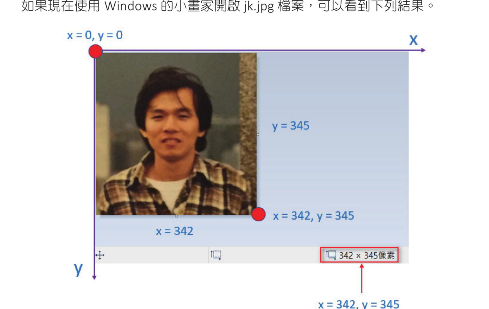
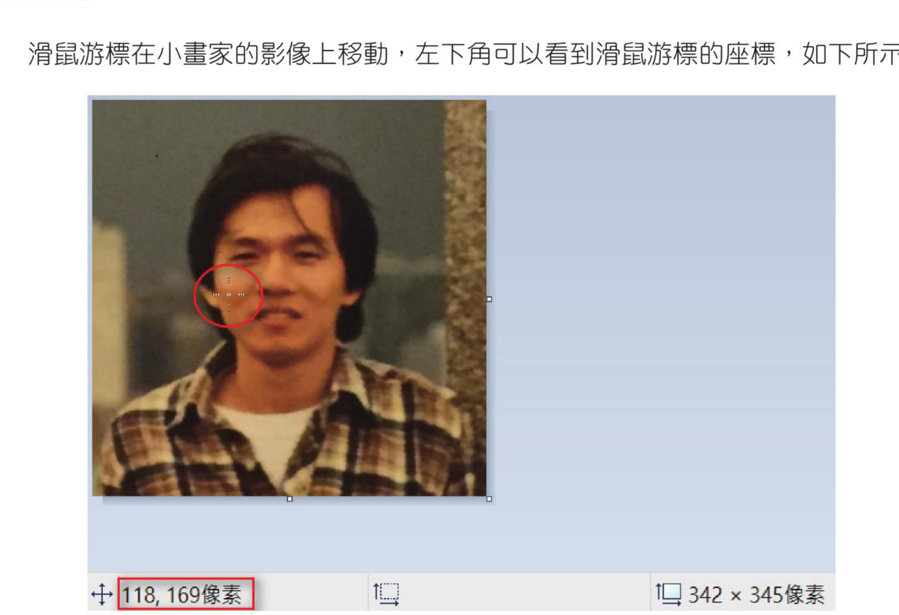
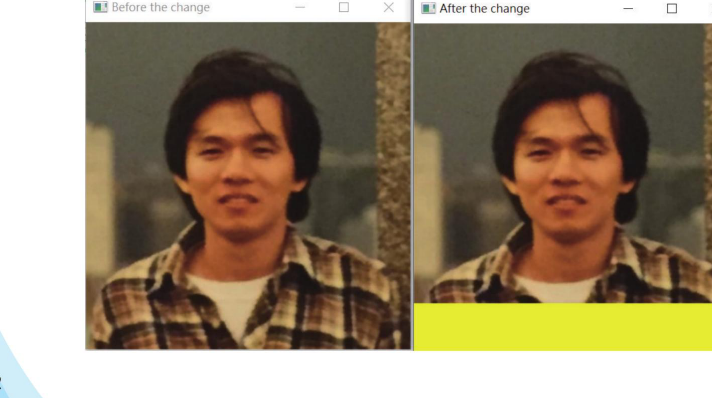

认识图像表示方法
shape/size/dtype 查看图像属性，以及读写单个像素的 BGR 值。
位图像表示法
想象一张 12×12 的位图，代表英文字母 H。每一个格子称为一个像素，像素的值只能是 0 或 1：
0表示黑色1表示白色
于是整张图就可以用一个 12×12 的 0/1 矩阵来表示。因为每个像素只由 1 个 bit 组成，这种表示法就叫做位图像表示法。
GRAY 色彩空间
单纯用 0/1 表示像素，精度太低。把表达范围扩展到 0 ~ 255（256 级），就能得到更细腻的灰度图像，这就是 GRAY 色彩空间：
0代表纯黑色255代表纯白色- 中间值代表深浅不同的灰
256 级刚好用 8 个 bit（1 个 Byte） 就能表示。下表是几个代表性灰度值的视觉对照：
| 10 进制值 | 灰度色彩 |
|---|---|
| 0 | |
| 32 | |
| 64 | |
| 96 | |
| 128 | |
| 160 | |
| 192 | |
| 224 | |
| 255 |
灰度图像在程序里可以用一个二维数组来表达：行数 × 列数，每个元素是 0~255 的整数。
RGB 色彩空间
彩色图像最常见的表达方式是 RGB 色彩空间：任何颜色都由 R（Red 红）、G（Green 绿）、B（Blue 蓝） 三原色按不同比例组成，每个分量称为一个通道（channel），取值范围都是 0 ~ 255。
2-3-1 由色彩得知 RGB 通道值
可以用配色网站 materialui.co/colors 查看颜色对应的 R / G / B 值：点任意色块，右上角会显示 rgb(R, G, B)。
2-3-2 使用 RGB 通道值获得色彩区块
Excel 的「设置单元格格式 → 填充 → 其他颜色 → 自定义」里可以直接输入 R / G / B 数值，立刻看到对应的颜色区块。例如 (255, 255, 0) 就是黄色。
RGB 每个通道 256 个值，三个通道组合起来共可表示：
2-3-3 RGB 彩色像素的表示法
一张 RGB 彩色图像可以用一个三维数组来表达，形状是 (高, 宽, 3)，也就是三个二维数组（B 层、G 层、R 层）叠在一起。
BGR 色彩空间
传统 RGB 顺序是 R → G → B，但 OpenCV 使用的是 BGR 顺序，即：
- 第 1 个通道数据是 B（蓝）
- 第 2 个通道数据是 G（绿）
- 第 3 个通道数据是 R（红）
这是 OpenCV 的默认色彩空间，后续所有像素读写、通道拆分都要记住这个顺序。
获得图像的属性
imread() 读进来的图像本质上是一个 Numpy 数组，有三个常用属性：
- shape：形状
- 灰度图：
(rows, columns) - 彩色图：
(rows, columns, channels)
- 灰度图：
- size：元素总数 =
rows × columns × channels（灰度图 channels=1，省略） - dtype：数据类型，通常是
uint8（8 位无符号整数，值在 0 ~ 255 之间）
程序示例 ch2_1.py：打印灰度图像的属性值
shape = (345, 342)
size = 117990
dtype = uint8

342 × 345 像素（x × y 顺序）。342 × 345（x × y），但 OpenCV 的 shape 是 (345, 342)，也就是 (y, x) 即 (行数, 列数)。坐标轴习惯和 Numpy 索引顺序相反，务必注意。
size 返回 117990 = 345 × 342；dtype 返回 uint8，表示 8 位无符号整数。
程序示例 ch2_2.py：打印彩色图像的属性值
shape = (345, 342, 3)
size = 353970
dtype = uint8
size 为 353970 = 345 × 342 × 3，多了一个通道维度。
像素的 BGR 值
jk.jpg 大小是 342 × 345，OpenCV 的坐标约定：
- x 轴范围
0 ~ 341（宽度 342） - y 轴范围
0 ~ 344（高度 345）

118, 169（x, y）。下面的示例将读取这一点的 BGR 值。2-6-1 读取特定灰度图像像素坐标的 BGR 值
访问像素的语法是 img[y, x]（先 y 后 x）。对灰度图，返回一个 uint8 标量：
程序示例 ch2_3.py：读取灰度图像 (169, 118) 的值
BGR = 128
2-6-2 读取特定彩色图像像素坐标的 BGR 值
对彩色图，img[y, x] 返回一个长度为 3 的 ndarray，依序是 [B, G, R]：
程序示例 ch2_4.py：读取彩色图像 (169, 118) 的 BGR 值
BGR = [ 45 112 191]
也可以一次只取一个通道，加第三个索引即可：
程序示例 ch2_5.py：分别列出三个通道的值
2-6-3 修改特定图像像素坐标的 BGR 值
改一个像素的值，直接赋一个长度为 3 的列表就行：
程序示例 ch2_6.py：把 (169, 118) 改成白色 [255, 255, 255]
更改后 BGR = [255, 255, 255]
改单个像素肉眼几乎看不出来，下面改一整块区域就明显了 —— 把图像右下角 50×50 的区域全涂成白色：
程序示例 ch2_7.py：右下角 50×50 像素改为白色
1：调整 ch2_7.py，改为在图像下方显示一条黄色横条。
提示：横条跨越整个宽度，高度可选 50 像素；黄色 BGR = [0, 255, 255]。
